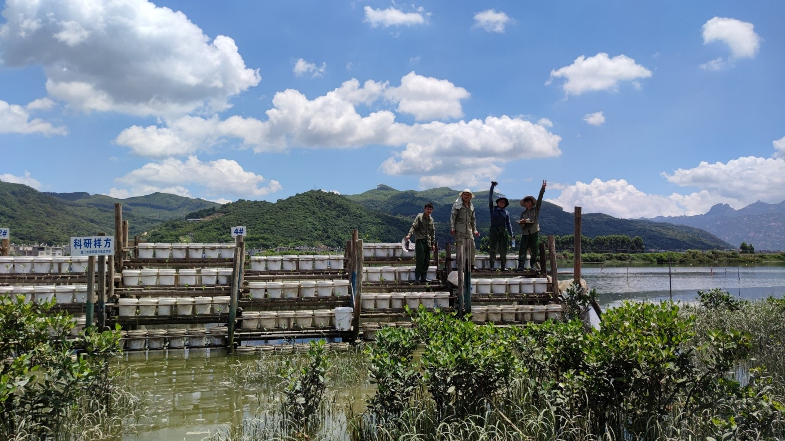
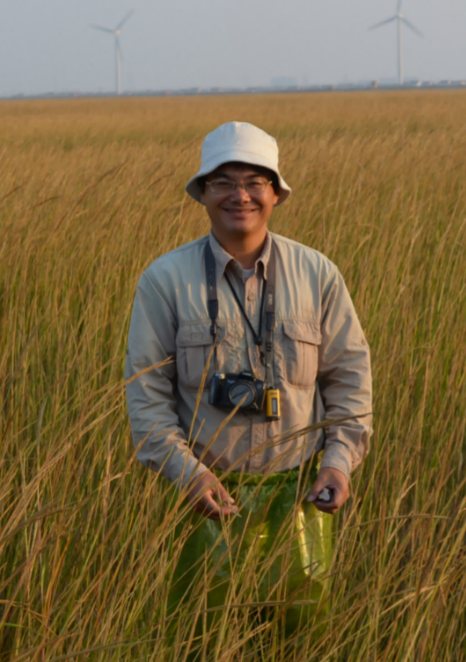
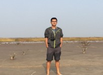
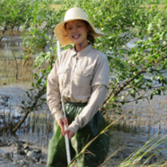
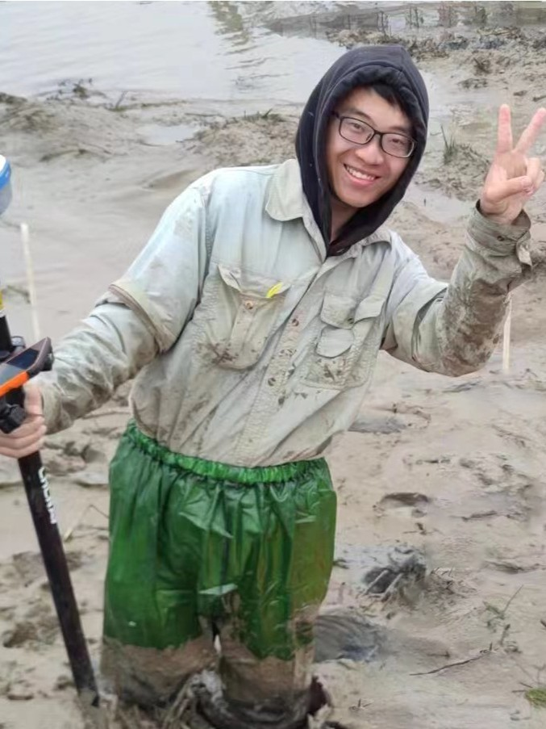
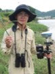
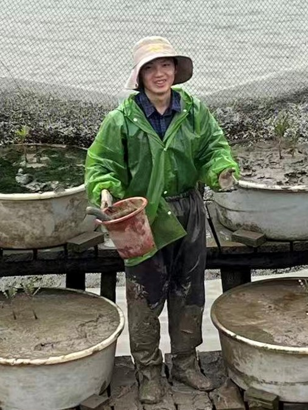
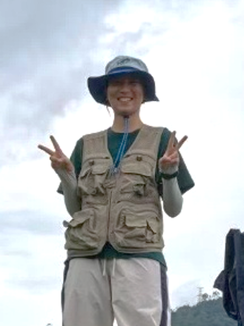

Collaborators
It takes a village.
Yihui Zhang 张宜辉, Professor (he/his)

Yihui is a distinguished professor in the College of Environment and Ecology, Xiamen University. He is interested in wetland ecology, plant ecology, biological invasion ecology, and plant-animal interactions. He is the co-supervisor during my postdoctoral period. We are collaborating in coastal plant ecology.
Contact: zyh@xmu.edu.com
Xincong Chen 陈欣淙, Associate Professor (he/his)

Xincong is an associate professor in the School of Geographical Sciences, Fujian Normal University. He is interested in wetland ecology, salt marsh, biological invasion ecology. We are collaborating in the ecology of invasive Spartina alterniflora.
Contact: chendpwsp@outlook.com
Dan Peng 彭丹, Postdoctoral researcher (she/her)

Dan is a postdoctoral researcher in the College of Life Sciences and Oceanography, Shenzhen University. She is interested in plant interaction, plant strategy, biological invasion ecology. We are collaborating in the mangrove-Spartina interaction and we are both interested in Acanthus ilicifolius.
Contact: Pengdann@outlook.com
Muwen Niu 牛牧文, PhD student (he/his)

Muwen is a phD student in the College of Environment and Ecology of Xiamen University. He is interested in plant traits of mangroves. We are collaborating in the trait-based ecology of mangrove.
Contact: muwen_niu@163.com
Yueyue Wang 王悦越, PhD student (he/his)

Yueyue is a phD student in the College of Environment and Ecology of Xiamen University. He is interested in coastal wetland ecology, especially the saltmarshes. We are collaborating in the population ecology of salt marsh.
Contact: wangyueyue161111@163.com
Dekai Chen 陈德楷, Undergraduate (he/his)

Dekai is an undergraduate in the College of Environment and Ecology of Xiamen University. He is interested in woody clonal plants and plant-animal interactions. We are collaborating in the clonal performance of Acanthus ilicifolius.
Contact: 33120242201550@stu.xmu.edu.cn
Ruoyang Tian 田若洋, Undergraduate (she/her)

Ruoyang is an undergraduate in the College of Environment and Ecology of Xiamen University. She is interested in non-structural carbohydrate. We are collaborating in the clonal storage of saltmarsh plants.
Contact: 1569412167@qq.com